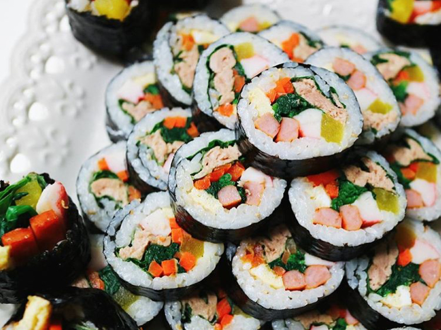

飯捲 在飯裡先加上香油、鹽、芝麻等後攪拌，再把切成條狀的煎蛋、菠菜、甜蘿蔔、火腿等放在海苔裡捲起來。
小吃
韓國是美味天堂，從韓餐、中餐到西餐，從麥當勞到漢堡王等速食連鎖店等，應有盡有。
但不管怎樣，可以用最低廉的價格享用到街頭飲食的美味。路邊小吃攤賣的食品，既可以站在攤位旁吃，也可以要求打包帶走。
因為價格合理，種類齊全且量多，因此深受年輕人喜愛，在梨花大學、新村、弘大等大學密集地區或狎鷗亭、鍾路、明洞、江南站等購物街上常常可見。
每個季節還有不同的時令美味，如夏季的冰品、冬季熱呼呼的魚板湯和辣炒年糕、鯛魚燒等。